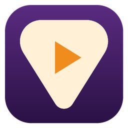

Studio Player
Ascoltare e studiare la musica con lo screen reader: rallentare un brano senza cambiarne il tono, ripetere un passaggio, separare gli strumenti e trovare gli accordi.
Studio Player è un lettore pensato per chi suona e studia la musica. Apri un brano e puoi rallentarlo senza che cambi il tono, cambiare il tono senza che cambi la velocità, ripetere quanto vuoi un passaggio difficile con il loop A-B e segnare le parti con i marcatori. Si comanda tutto con la tastiera, e lo screen reader ti dice sempre dove sei e cosa sta succedendo.
Quando vuoi andare più a fondo, Studio Player separa un brano nelle sue parti (voce, chitarra, basso, batteria e il resto): puoi ascoltare solo la chitarra per capire cosa suona, oppure toglierla e suonarci sopra tu. Riconosce gli accordi e la tonalità, ti propone le scale per improvvisare, trova le note degli stem e suona i file MIDI con i banchi di suoni che preferisci.
E quando è il momento di suonare, Studio Player lavora con le schede audio professionali attraverso i loro driver ASIO®: senti il tuo strumento in cuffia insieme al brano, ti registri sopra il brano tutte le volte che vuoi e confronti le registrazioni al volo, e mandi il metronomo e ogni parte del brano sulle sue uscite, per esempio il click solo in cuffia quando suoni dal vivo. I file MIDI possono suonare anche sul tuo modulo sonoro esterno.
Versione 1.6.0 del 11 novembre 2026. Gratuito, per Windows 10 e 11. Il link porta sempre all'ultima versione.
L'angolo di HDX
Il gruppo Telegram di tutti i miei programmi e delle mie add-on: novità, domande, segnalazioni e suggerimenti, insieme agli altri utenti.
Cosa serve
- Windows 10 o 11 a 64 bit.
- Uno screen reader: Studio Player parla con NVDA e con JAWS anche quando non è in primo piano.
- Per gli stem, gli accordi e le note: il motore stem, che si scarica a parte dalle Impostazioni perché è grande. Con una scheda video NVIDIA è molto più veloce.
- Per l'ascolto dello strumento, le registrazioni e le uscite separate: una scheda audio con driver ASIO®.
Cosa fa
- Velocità e tono indipendenti: rallenti senza che cambi il tono, cambi il tono senza che cambi la velocità.
- Il loop A-B, i loop salvati per ogni brano, il loop che accelera un poco a ogni giro e la sequenza dei loop, con la pausa e il conteggio tra un giro e l'altro.
- I marcatori con il nome, per saltare subito alla strofa o al ritornello.
- Il metronomo, da solo o sui battiti del brano, con il conteggio prima di partire.
- Gli stem: voce, chitarra, basso, batteria (anche nei suoi pezzi), piano e il resto, con il mixer di ogni parte; anche di tutta una scaletta in una volta, un brano dopo l'altro.
- Gli accordi e la tonalità del brano, detti anche mentre suona, e le scale per improvvisare.
- Le note degli stem, per capire una melodia o un giro di basso.
- I file MIDI con i banchi di suoni SoundFont o sul tuo modulo sonoro esterno, il mixer dei canali, gli strumenti da cambiare e il karaoke.
- Le tablature di Guitar Pro e gli spartiti MusicXML, lette come corda e tasto o come note, anche un pezzo alla volta, con le tracce, le battute e l'ascolto di ogni passaggio.
- L'accordatore per chitarra, basso e ukulele, con un tic che ti guida verso la nota giusta e tante accordature.
- Volume uguale per tutti i brani, equalizzatore parametrico, stereo e canali, ascolto notturno.
- I video nella finestra del lettore, con la scelta della traccia audio, i sottotitoli letti e i capitoli come marcatori.
- Il convertitore di formati e l'esportazione del brano come lo senti: con gli stem scelti, la velocità, il tono e gli effetti, tutto o solo un tratto.
- Le schede audio con driver ASIO®: la musica sulle uscite che scegli e lo strumento da un ingresso, in mono o in stereo, anche verso REAPER con ReaRoute, con l'ascolto dello strumento in cuffia.
- Le registrazioni sopra il brano, allineate da sole: tasti singoli per registrare, confrontare al volo, scegliere la migliore ed esportarla insieme al brano; con il loop, un giro solo o una registrazione per ogni giro.
- Le uscite separate per il dal vivo: il metronomo e il conteggio solo in cuffia, e ogni stem o canale MIDI sulla sua uscita della scheda.
- Le scalette: aggiungi i brani a una scaletta salvata dal menu contestuale, senza aprirla, esportala come testo da stampare o copiala con i brani su una chiavetta; e le Proprietà di ogni brano, con tutti i suoi dati e il testo, se c'è.
- Annunci a voce o con suoni riconoscibili, scorciatoie tutte modificabili, anche valide in tutto Windows, e aggiornamenti automatici, in italiano, inglese e spagnolo.
 ASIO is a registered trademark of Steinberg Media Technologies GmbH. ASIO is a trademark of Steinberg Media Technologies GmbH, registered in Europe and other countries.
ASIO is a registered trademark of Steinberg Media Technologies GmbH. ASIO is a trademark of Steinberg Media Technologies GmbH, registered in Europe and other countries.
Guida e novità
Sostieni il progetto
I miei programmi sono gratuiti e li porto avanti da solo, nel tempo libero. Se ti sono utili, puoi aiutarmi con una donazione.
Hai domande o suggerimenti? Scrivimi.